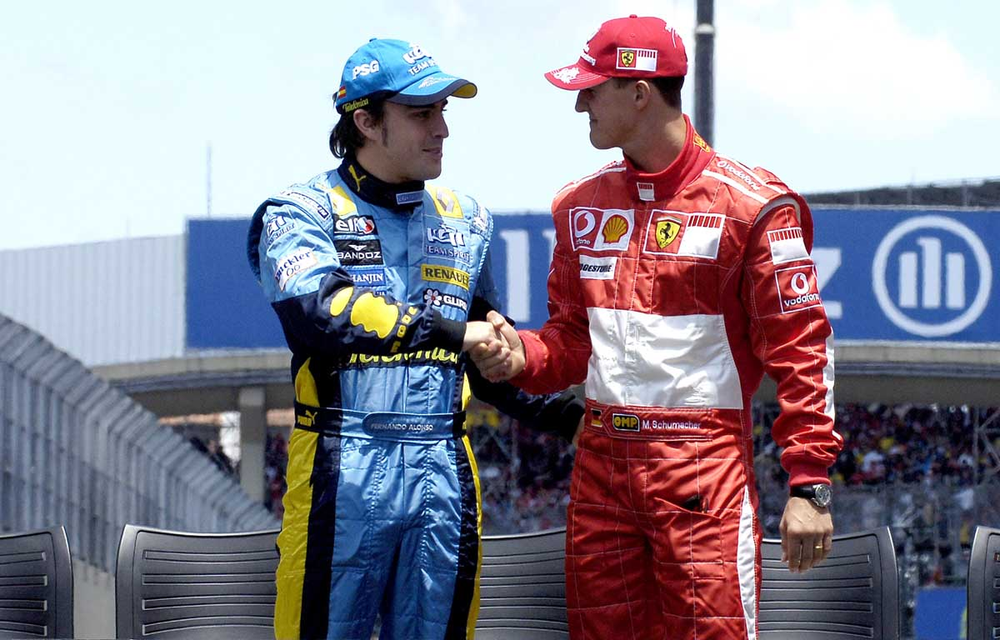

Michael Schumacher vs Damon Hill (1994-1995)

Like Mansell, Damon Hill endured a series of near-misses in the hunt for a world championship crown before actually succeeding. And most of the time it was Michael Schumacher blocking his path, in some cases all too literally.
As understudy to Prost at Williams in 1993, Hill was set to perform the same role again in 1994 as Ayrton Senna replaced the Frenchman. Tragically though, Senna was killed after crashing out of the lead at Imola, and the still inexperienced Hill was thrust into the role of team leader. He adapted admirably, and with only one point between him and Schumacher heading into the last race of the season, the winner in Australia would take the title.
Schumacher took the lead when the lights went out, but a mistake half-way through the race gave Hill the chance to overtake. The pair collided and although Schumacher was sent spearing off into a tyre wall, Hill was left with suspension damage that forced him out too, and his shot at glory was gone. It was deemed a racing incident by the stewards.
Schumacher and Hill would finish first and second in the standings again a year later, albeit with a much bigger gap between them, and it wasn’t until 1996 - Schumi’s first year with Ferrari - that Hill finally prevailed and left a certain commentator with a lump in his throat.
Heading into the final race of the season, Benetton driver Michael Schumacher was leading the Drivers' Championship with 92 points; Williams driver Damon Hill was second on 91 points, one point behind Schumacher. Williams led the Constructors' Championship with 108 points, while Benetton were 5 points behind with 103. Thus, both titles were still at stake and they would be determined in the final round.
Michael Schumacher vs Jaques Villeneuve (1997)
Some commentators recalled the 1994 finale, which saw a title deciding collision between Schumacher and Damon Hill. At Jerez, the qualifying session was noteworthy, as three drivers, Villeneuve, Schumacher, and Frentzen, all registered the same fastest qualifying time. Villeneuve was awarded pole position since he had set the time first, and this would be the final pole of his F1 career. At the start of the race, Schumacher had a good start, overtaking Villeneuve to take the lead. By lap 48 Villeneuve was catching up to Schumacher and attempted to overtake. Braking later than the German at the Dry Sac corner, Villeneuve had the inside line and was slightly ahead when Schumacher turned into him, his front right wheel connecting with the sidepod of the Williams car. Schumacher retired on the spot and Villeneuve went to take third place and earn four points, enough to take the 1997 title. Schumacher was later punished by the FIA for causing an avoidable accident and was disqualified from the championship, although his race results (grid position, finishing position, points) still counted towards his official statistics. In the race itself, Mika Häkkinen went on to take his first ever career victory.
Michael Schumacher vs Mika Hakkinen (1998-2001)

Unlike a lot of the rivalries we’ve seen in the past, the one shared by Michael Schumacher and Mika Hakkinen either side of the millennium never became acrimonious. They respected each other too much to let their battles on track boil over into a war of words; a rarity when the biggest prize in motorsport is at stake.
The drivers were a class apart in 1998, although it was the Finn who prevailed having been equal on points with the German with two races to go. Mid-way through the following season it looked like battle would be similarly close, only for Schumacher to break his leg at the British Grand Prix, ending his challenge.
By 2000 the Schumacher-Hakkinen rivalry was back on, and even though Schumi had started the season with three wins on the bounce, a dismal run of four retirements in five races had left Hakkinen seven points clear with four races to go. Schumacher knuckled down and won all four of the remaining grands prix, deservedly sealing his third title and conquering the only opponent he ever admitted to fearing.
Michael Schumacher vs Kimi Raikkonen & Juan Pablo Montoya (2003 Record world champion).

The 2003 season produced one of the most memorable title deciders with many statistics being set including the first to win six world titles, none other than the ultimate record breaker: Michael Schumacher. Despite this, he had to face the challenge of seven other drivers winning races that year, including David Coulthard's last ever victory and the first for Mclaren teammate and 'Iceman' Kimi Raikkonen. Another future big name to put an appearance on the top step was Fernando Alonso, becoming the youngest ever grand prix winner. Ralf Schumacher put an end to his winning ways but he and teammate Juan Pablo Montoya gave Williams their last real competitive season with four wins between them. There were many dramatic races including the chaotic race in Brazil and the tense final race at Japan.
Michael Schumacher vs Fernando Alonso (2006).
The tyre rules were changed back for 2006 and Ferrari were back on form. But Schumacher faced a tough rival in the shape of new world champion Fernando Alonso.
This was as closely-matched a championship battle as has ever been fought. While Alonso managed four wins on the trot Schumacher hit back with a hat-trick of victories in the middle of the season.
At a crucial point Ferrari’s usually exceptional reliabilit failed them. Schumacher’s engine blew while he was leading from Alonso at Japan. He narrowly lost the championship but signed off with a majestic drive against the odds to finish fourth at Interlagos after a puncture. It seemed a fitting conclusion to a great career – but it turned out this was not the end.